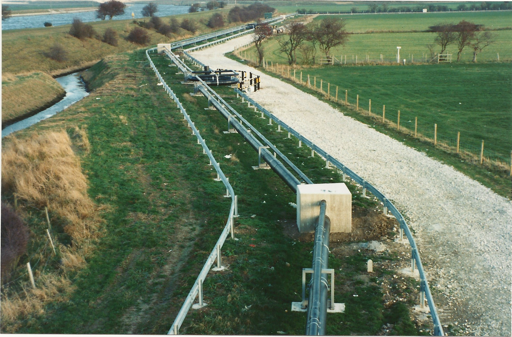
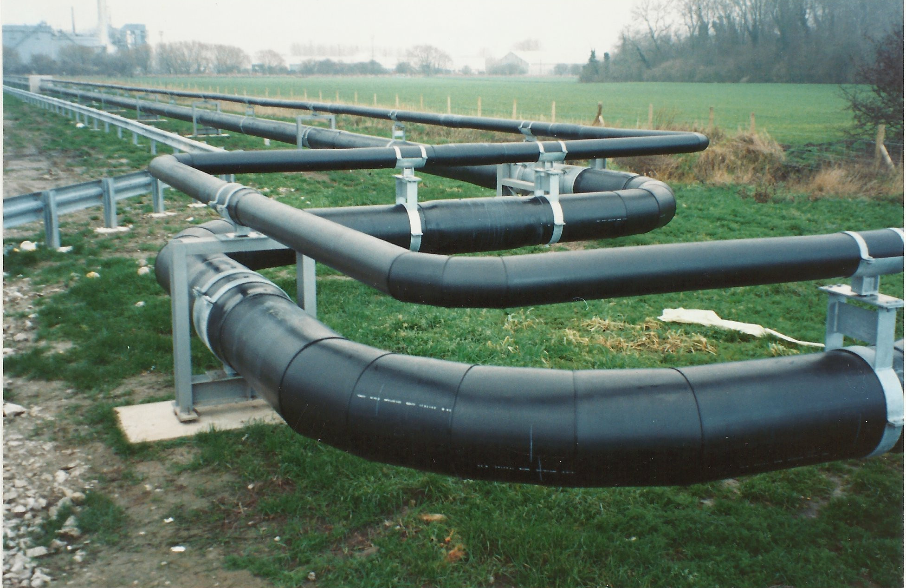

<div class="container">
  <div class="row">
    <side-navigation></side-navigation>
    <div class="col-8">
      <h3>Fertilizer and Chemical Plant</h3>
      <p>Above ground pre-insulated pipeline to transfer liquid ammonia from supply ship to chemical plant two miles from the dock bay.</p>
      <p>The primary pipeline was constructed using 12-inch dia. Carbon steel pipe with a ¾” thick pipe wall, pre-insulated using polyurethane foam encapsulated 20-inch diameter HDPE outer casing.</p>
      <p>A 3-inch diameter pre-insulated steel pipe ‘piggy-backed’ to the primary pipeline was for the purpose of a circulation delivery to help maintain pressure and temperature of the product.</p>
      <p>During construction, all pipe welds were heated to 600 degrees, tested using radiography procedures.</p>
      <p>Expansion loops and concrete anchor blocks were installed to provide controlled movement of the pipeline.</p>
      
      
    </div>
  </div>
</div>